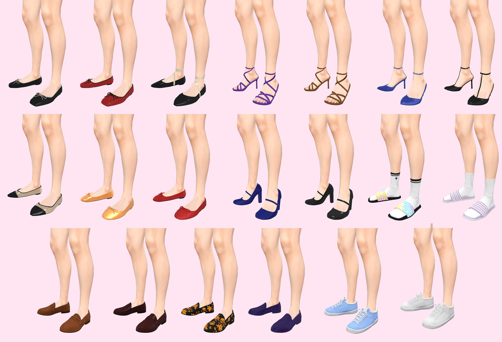

Storylines: Passion and Fashion
Tangent Interactive Media | Mobile | 2021-2022
Storylines: Passion & Fashion is a free-to-play romance narrative-based mobile game. My role in the project is the Technical Artist, and my responsibilites include creating and assembling environments, laying out the stories using an in-house narrative layout tool, and creating a variety of clothing assets. I also occasionally contributed some programming work to our custom Unity editor tools, implementing features that were needed but not high enough priority for the main developers.
I modelled and textured a library of modular environment assets, allowing us to quickly create new sets that will be needed for upcoming stories. Referencing concepts created by the art director, I created over 40 interior and exterior sets, such as a relaxing tropical beach, an intimate cafe, and a grand casino. I also used the Unity Animator to animate environment props when required, such as strobe lights and lasers in a nightclub, or subtle waves on the beach shore.


I developed and maintained the shaders used in environment assets, such as the general environment shader, glass, and water. The environments use a flexible and lightweight lighting solution, allowing us to create multiple custom lighting schemes per set to express a variety of moods in the stories.

when there was downtime between creating new sets or doing narrative layout, I would also contribute character assets to help fill out our catalog of items. I modelled, textured, rigged, and implemented a variety of character assets such as hats, shoes, clothing, and hairstyles.

I created multiple types of shoes, using variations in the silhouette, colours, and materials to efficiently create a variety of different styles of shoes.

I also worked on a few hairstyles for our characters. It was a fun challenge to figure out how to faithfully depict different hair textures and styles!
We wanted to offer the players more hair customization options, but since new hairstyles could be time-consuming to make and usually less prioritized than creating new clothing assets, I pitched the idea of adding a hair highlights feature. This would allow players to at least further customize the existing hairstyles to create new types of looks. Since the hair texture is greyscale, with the colour applied in-engine, I added the hair highlight masks into the Green and Blue channels of the existing hair textures. This was also important to reduce the number of overall textures in the project, especially as our asset library will only ever get bigger!
To give as many pattern options as possible, I split the Green channel of the RGBA hair texture into 4 components (0-0.24, 0.25-0.49, 0.5-0.74, 0.75-1), with each highlight option restricted to a different interval. The ombre option is added separately in the Blue channel. All the highlight options are available to mix and match as well, and different colours can be chosen for the base hair color, highlights and ombre. I added the functionality to the existing hair shader, implemented the options to our existing character creation tool, as well as painted the hair masks for our existing hairstyles.
I completed the narrative layout on multiple books, keeping up with a weekly release schedule of new chapters. Referencing the scripts written by the narrative designers, I used the custom in-house tool to implement the stories in Unity. I would design the characters and love-interests, position them in the scene, selection the animations, and decide on the composition of the shots. Doing the narrative layout also involved keeping track of branching narratives with variables, integrating the special rewards, and implementing music and sound effects.